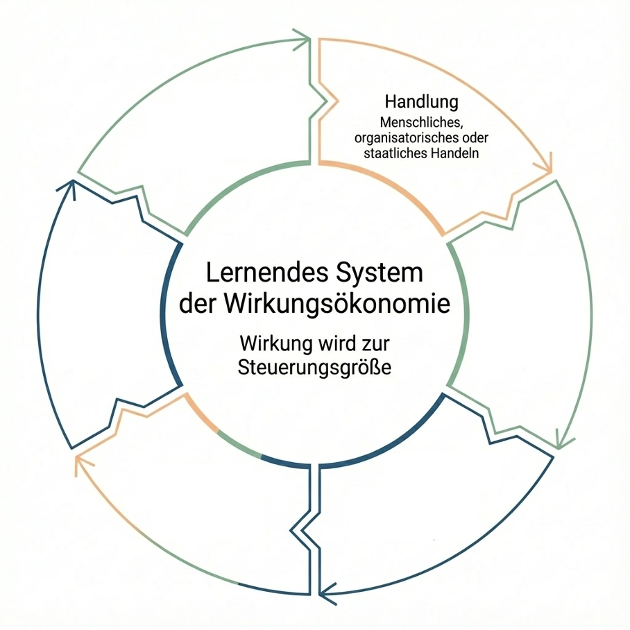
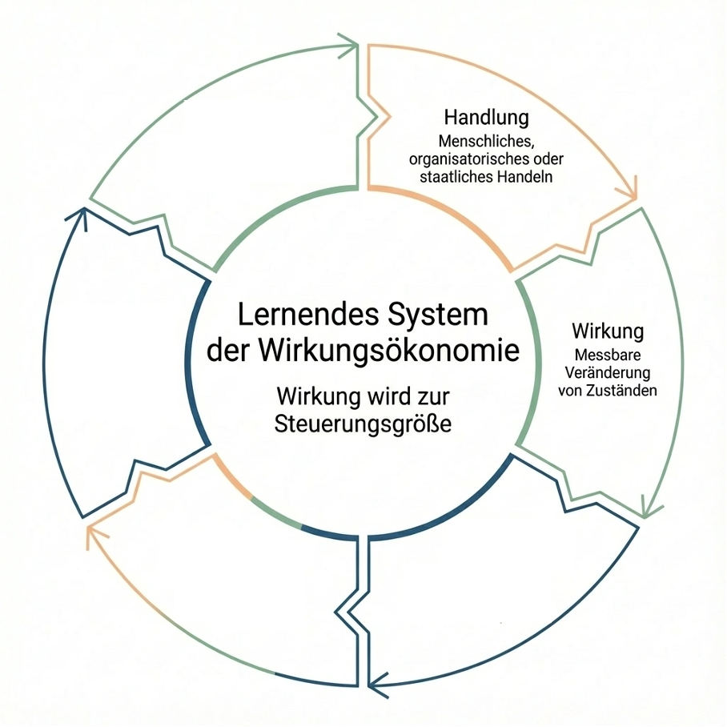
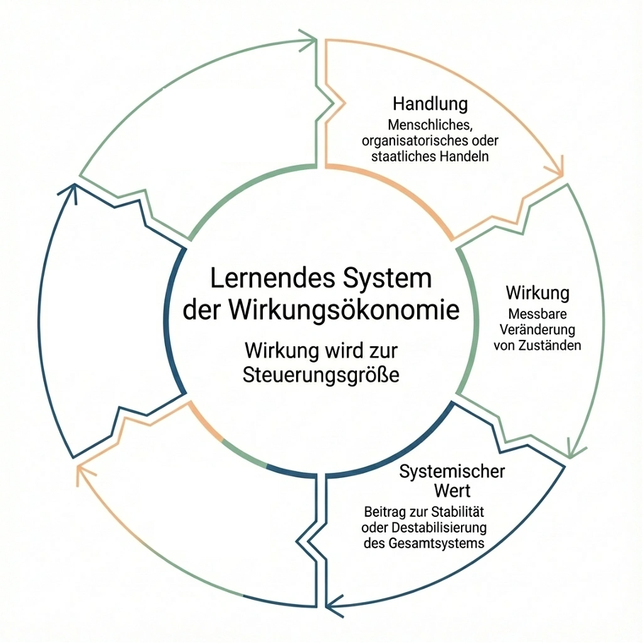
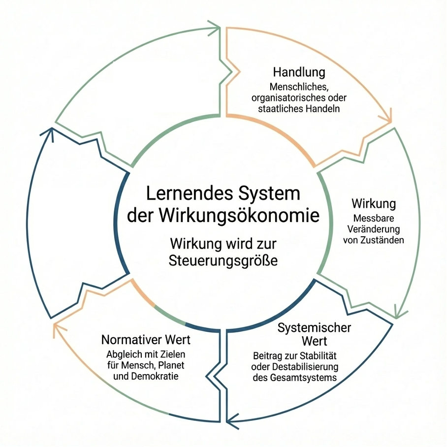
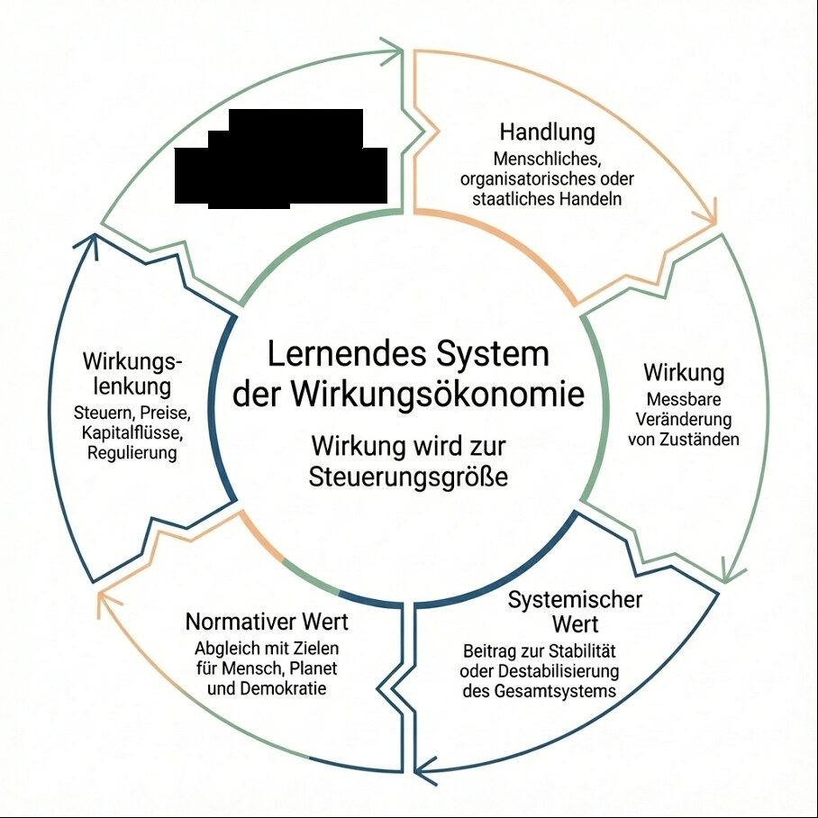
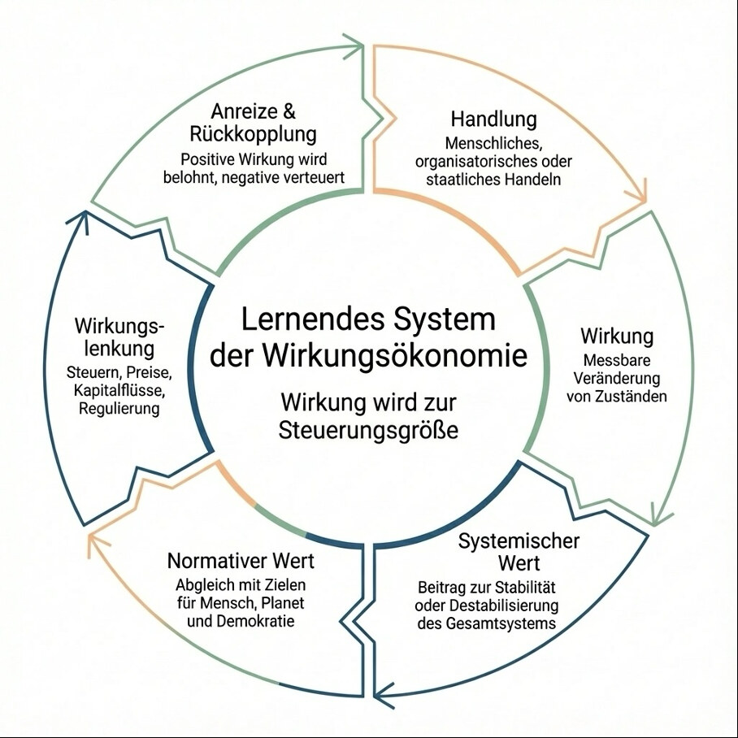

Executive Summary - Die Wirkungsökonomie in Kürze
Die Wirkungsökonomie ist ein wirkungsorientiertes Wirtschafts- und Gesellschaftsmodell, das wirtschaftliches, gesellschaftliches und institutionelles Handeln systematisch an seiner realen Wirkung ausrichtet. Sie ersetzt Kapital, Umsatz und Wachstum als primäre Steuerungsgrößen nicht, ordnet sie jedoch neu. Maßstab für Leistung ist nicht mehr finanzielle Rendite, sondern der Beitrag zur Stabilität von Mensch, Planet und Demokratie.
Kern der Wirkungsökonomie ist ein geschlossener Kreislauf aus Handlung, Wirkung, systemischem Wert, normativer Bewertung, Steuerung und Rückkopplung. Jede Handlung erzeugt Wirkung. Diese Wirkung wird messbar erfasst, in ihrem systemischen Kontext eingeordnet und anhand gemeinsam vereinbarter Ziele bewertet. Auf dieser Grundlage werden ökonomische, gesellschaftliche und institutionelle Anreize so gesetzt, dass positive Wirkung belohnt und negative Wirkung systematisch unattraktiv wird.
Die normative Grundlage bilden die Sustainable Development Goals der Vereinten Nationen, ergänzt um SDG+, eine explizite Erweiterung für demokratische Stabilität, Rechtsstaatlichkeit und Diskursqualität in offenen Gesellschaften. Dadurch bleibt die Wirkungsökonomie international anschlussfähig und zugleich demokratisch verankert.
Im Unterschied zu bestehenden Modellen greift die Wirkungsökonomie nicht nachgelagert über Umverteilung oder Kompensation ein, sondern setzt an der Entstehung von Wert an. Preise, Steuern, Einkommen, Kapitalzugänge und institutionelle Rahmenbedingungen werden wirkungsbasiert gestaltet. Zentrale Instrumente sind unter anderem Wirkungsumsatzsteuer, Wirkungskörperschaftsteuer, Wirkungseinkommenssteuer sowie wirkungsbasierte Transfers wie das Wirkungseinkommen. Der Wettbewerb folgt einer Reverse Merit Order, bei der sich nicht das billigste, sondern das wirkungsbeste Angebot durchsetzt.
Die Wirkungsökonomie ist universell anwendbar. Sie gilt nicht nur für Produkte und Unternehmen, sondern ebenso für Einkommen, Mieten, Gesundheitssysteme, Altersvorsorge, Wissenschaft, Medien, Plattformen und öffentliche Institutionen. Überall dort, wo Handlungen systemische Wirkung entfalten, bietet sie ein konsistentes Steuerungsprinzip.
Als lernendes System ist die Wirkungsökonomie offen für neue wissenschaftliche Erkenntnisse, technologische Entwicklungen und gesellschaftliche Prioritäten. Fehler sind Teil des Prozesses, solange sie sichtbar bleiben und korrigiert werden können. Die Wirkungsökonomie ist damit kein statischer Zielzustand, sondern eine dauerhafte Form kollektiver Selbststeuerung.
Sie ist weder ein moralisches Projekt noch eine ideologische Alternative, sondern eine funktionale Antwort auf die Herausforderungen komplexer Gesellschaften im 21. Jahrhundert. Die Wirkungsökonomie erhält Märkte, Wettbewerb und Freiheit, koppelt sie jedoch an Verantwortung und Wirkung. In dieser Neuausrichtung liegt ihr zentraler Mehrwert - und ihre Notwendigkeit.
Einleitung
Unsere Gesellschaft beurteilt ständig. Produkte, Unternehmen, politische Entscheidungen, Technologien und Lebensstile. Wir sprechen von gut oder schlecht, nachhaltig oder schädlich, verantwortungsvoll oder gefährlich.
Und doch zeigt sich immer deutlicher: Unsere Urteile sind widersprüchlich, emotional aufgeladen und systemisch folgenlos.
Ein T-Shirt für wenige Euro gilt als wirtschaftlicher Erfolg, obwohl es unter prekären Arbeitsbedingungen produziert wurde, hohen Wasserverbrauch verursacht, Umwelt und Gesundheit schädigt und langfristige soziale und ökologische Folgekosten erzeugt.
Gleichzeitig existieren Werte wie Menschenwürde, Klimaschutz oder soziale Gerechtigkeit als abstrakte Leitbilder - ohne verlässliche Verbindung zu den Entscheidungen, die Wirtschaft, Märkte und Alltag tatsächlich prägen.
Das zentrale Problem ist dabei nicht mangelnde Moral. Es ist mangelnde Beurteilungsfähigkeit.
Um etwas beurteilen zu können, müssen wir den vollständigen Weg gehen: von der Handlung über die ausgelöste Wirkung, zur systemischen Bedeutung dieser Wirkung und schließlich zur normativen Bewertung anhand der gemeinsamen Ziele, die sich die Menschheit gegeben hat.
Genau dieser Weg fehlt den heutigen Wirtschafts- und Steuerungssystemen.
Die bestehende Marktwirtschaft ist primär kapitalgesteuert. Gewinn, Einkommen und Vermögensbildung orientieren sich überwiegend an monetären Größen - nicht an der tatsächlichen Wirkung wirtschaftlichen Handelns auf Menschen, Umwelt und gesellschaftliche Stabilität.
Die soziale Marktwirtschaft war historisch ein entscheidender Fortschritt. Sie verband Marktmechanismen mit sozialem Ausgleich und schuf Wohlstand und Stabilität in einer industriellen Welt.
Doch sie blieb ein System, in dem Kapital die zentrale Steuerungsgröße ist und Wirkung bestenfalls begleitend berücksichtigt wird.
In einer hochvernetzten, globalisierten Welt mit planetaren Grenzen, komplexen Lieferketten und starken Rückkopplungseffekten stößt dieses Steuerungsprinzip an seine systemischen Grenzen.
Die Wirkungsökonomie setzt genau hier an. Sie markiert keinen Bruch mit der Marktwirtschaft, sondern ihre konsequente Weiterentwicklung.
Sie ersetzt die kapitalgesteuerte Marktwirtschaft durch eine wirkungsorientierte Marktwirtschaft, in der Gewinn, Einkommen und Vermögensbildung dauerhaft an die positive Wirkung wirtschaftlichen Handelns auf Mensch, Planet und Demokratie gekoppelt sind.
Reichtum entsteht in diesem Modell nicht trotz, sondern durch gesellschaftlichen und ökologischen Nutzen.
Die Wirkungsökonomie operationalisiert diesen Anspruch über ein lernendes Kreislaufsystem. Wirkung wird sichtbar gemacht, systemisch eingeordnet, normativ anhand international vereinbarter Ziele bewertet und über ökonomische Steuerungsmechanismen in zukünftiges Handeln rückgekoppelt.
Nachhaltiges Handeln wird damit nicht moralisch eingefordert, sondern rational belohnt. Schädliches Handeln wird nicht verboten, sondern verliert seine ökonomische Attraktivität.
Dieser Aufsatz entfaltet die Wirkungsökonomie als ein solches Kreislaufmodell. Schritt für Schritt, entlang eines klar definierten Prozesses und anhand eines durchgängigen Beispiels: der Herstellung eines T-Shirts.
Ziel ist es, ein Wirtschafts- und Gesellschaftsmodell zu beschreiben, das Beurteilung ermöglicht, Steuerung wirksam macht und Transformation nicht durch Verzicht, sondern durch systemische Anreize erreicht.
II. Handlung

Am Anfang jeder Wirkung steht eine Handlung. In der Wirkungsökonomie bezeichnet Handlung nicht nur individuelles Verhalten, sondern jede bewusste Entscheidung von Menschen, Organisationen, Unternehmen oder staatlichen Akteuren, die reale Zustandsveränderungen auslöst. Handlung ist damit der erste Wirkungsimpuls im Kreislauf und zugleich der zentrale Hebel für Transformation.
Im klassischen Wirtschaftssystem gelten Handlungen lange Zeit als ökonomisch neutral, solange sie sich nicht im Preis niederschlagen. Ob eine Entscheidung ökologische Schäden verursacht, Menschen ausbeutet oder gesellschaftliche Stabilität untergräbt, bleibt für den Markt zunächst irrelevant, sofern Kosten und Erlöse stimmen. Genau diese Annahme stellt die Wirkungsökonomie grundlegend infrage.
Am Beispiel eines T-Shirts wird deutlich, wie viele Handlungen bereits vor dem fertigen Produkt stattfinden und welche Tragweite sie haben. Dazu zählen unter anderem die Auswahl der eingesetzten Faser, etwa konventionelle Baumwolle, Bio-Baumwolle oder Recyclingmaterial, die Entscheidung über den Anbauort und den Wasser- und Pestizideinsatz, die Wahl der Spinnerei und der Nähfabrik, die Festlegung von Arbeitszeiten, Löhnen und Sicherheitsstandards, der Einsatz bestimmter Chemikalien beim Färben und Ausrüsten, die Organisation der Transportwege, die Energiequelle der Produktionsstätten, die Preis- und Margenstrategie sowie die Art der Vermarktung und Kommunikation gegenüber den Konsumentinnen und Konsumenten.
Jede dieser Entscheidungen ist ein eigenständiger Wirkungsimpuls. Zusammen bilden sie die Entscheidungsarchitektur des Produkts. In der kapitalgesteuerten Marktwirtschaft werden diese Impulse primär nach Kostenminimierung, Geschwindigkeit und Skalierbarkeit gesetzt. Wirkung auf Mensch und Umwelt bleibt ein externer Effekt, der nicht systematisch in die ökonomische Bewertung eingeht.
Die Wirkungsökonomie setzt genau hier an und verschiebt den Fokus von Produkten auf Entscheidungen. Sie betrachtet Handlungen nicht länger als bloße Mittel zur Gewinnerzielung, sondern als Ausgangspunkt messbarer Wirkungen. Eine Handlung ist in diesem Verständnis weder gut noch schlecht, sondern zunächst wirkungsoffen. Ihre Bewertung erfolgt erst in den nachgelagerten Schritten des Kreislaufs.
Diese Trennung ist entscheidend. Denn sie verhindert moralische Vorverurteilungen und ermöglicht eine sachliche, datenbasierte Analyse. Erst wenn klar ist, welche Wirkung eine Handlung tatsächlich entfaltet, kann sie systemisch eingeordnet und normativ bewertet werden. Handlung und Bewertung werden damit sauber voneinander getrennt.
Gleichzeitig macht diese Perspektive deutlich, wo Transformation tatsächlich beginnt. Nicht beim Endprodukt, nicht beim Konsum und nicht bei nachträglichen Ausgleichsmaßnahmen, sondern bei den Entscheidungen entlang der gesamten Wertschöpfungskette. Wer Handlungen verändert, verändert Wirkung. Wer Anreize für Handlungen verändert, verändert Märkte.
Im Wirkungs-Kreislauf ist Handlung daher kein isolierter Startpunkt, sondern der erste Teil eines lernenden Systems. Die Art und Weise, wie Handlungen gesetzt werden, wird im weiteren Verlauf gespiegelt, bewertet und rückgekoppelt. Genau diese Rückkopplung sorgt dafür, dass sich zukünftige Handlungen systematisch verändern können.
Damit ist Handlung nicht nur Ursprung von Wirkung, sondern auch der Ort, an dem wirtschaftliche Rationalität neu definiert wird. In einer wirkungsorientierten Marktwirtschaft handeln Akteure nicht weniger rational als zuvor, sondern auf einer erweiterten Informationsbasis. Entscheidungen werden nicht allein nach Preis und Gewinn getroffen, sondern nach ihrer erwartbaren Wirkung im Gesamtsystem.
Im nächsten Schritt des Kreislaufs wird diese Wirkung sichtbar gemacht. Erst dort zeigt sich, was Handlungen tatsächlich bewirken und warum ihre Bewertung ohne diesen Zwischenschritt zwangsläufig scheitern muss.

Auf jede Handlung folgt eine Wirkung. Wirkung bezeichnet in der Wirkungsökonomie die messbare Veränderung realer Zustände, die durch menschliches, organisatorisches oder staatliches Handeln ausgelöst wird. Sie ist kein moralisches Urteil und keine Bewertung, sondern eine empirisch erfassbare Realität. Wirkung beschreibt, was faktisch geschieht.
Diese begriffliche Trennung ist zentral. Denn solange Wirkung mit Bewertung vermischt wird, bleibt jede Beurteilung unscharf, emotional oder ideologisch aufgeladen. Die Wirkungsökonomie insistiert deshalb darauf, Wirkung zunächst vollständig wertneutral zu erfassen.
Am Beispiel eines T-Shirts wird diese Logik besonders deutlich. Die Entscheidungen entlang der Wertschöpfungskette führen zu konkreten, messbaren Effekten: Treibhausgasemissionen entstehen beim Anbau der Faser, in der Verarbeitung, im Transport und bei der Energieversorgung der Produktionsstätten. Wasser wird verbraucht, häufig in Regionen mit bereits bestehender Wasserknappheit. Chemikalien werden eingesetzt, etwa beim Färben und Ausrüsten, mit Auswirkungen auf Böden, Gewässer und die Gesundheit von Arbeiterinnen. Arbeitszeiten, Löhne und Sicherheitsstandards beeinflussen physische und psychische Belastungen, Unfallrisiken und soziale Stabilität in den Produktionsregionen.
All diese Effekte sind Wirkung. Sie lassen sich quantifizieren, dokumentieren und vergleichen. Sie sind unabhängig davon, ob ein Produkt günstig oder teuer, gefragt oder unbeliebt ist. Wirkung ist damit die Schnittstelle zwischen wirtschaftlichem Handeln und realer Welt.
Die gute Nachricht ist: Die Daten dafür existieren längst. Unternehmen erheben heute umfangreiche Informationen über ihre Tätigkeiten und Lieferketten. Internationale Standards wie die Global Reporting Initiative (GRI) sowie die europäischen Vorgaben der Corporate Sustainability Reporting Directive (CSRD) und der European Sustainability Reporting Standards (ESRS) verlangen detaillierte Angaben zu Emissionen, Ressourcenverbrauch, Arbeitsbedingungen, Lieferkettenrisiken und Governance-Strukturen. Hinzu kommen zunehmend produktbezogene Daten, etwa im Rahmen digitaler Produktpässe oder lieferkettenspezifischer Audits.
In der Wirkungsökonomie werden diese Daten nicht als Kommunikationsinstrument verstanden, sondern als Grundlage der Steuerung. Sie bilden eine Art erweiterte Buchhaltung, die nicht nur monetäre Größen erfasst, sondern reale Zustandsveränderungen bei Mensch und Umwelt sichtbar macht. Wirkung wird damit aus dem Bereich des Ungefähren in den Bereich des Messbaren überführt.
Entscheidend ist dabei die klare Zuordnung. Wirkungsdaten müssen so erhoben und aggregiert werden, dass sie Produkten, Prozessen und Akteuren eindeutig zugeordnet werden können. Beim T-Shirt bedeutet das, dass Emissionen, Wasserverbrauch oder Arbeitsbedingungen nicht nur auf Unternehmensebene betrachtet werden, sondern entlang der konkreten Lieferkette und möglichst produktbezogen erfasst werden. Nur so lässt sich später nachvollziehen, welche Entscheidungen welche Wirkungen ausgelöst haben.
Ein weiterer zentraler Punkt ist die zeitliche Dimension. Wirkung ist nicht immer sofort sichtbar. Manche Effekte entfalten sich unmittelbar, andere zeitverzögert. Die Wirkungsökonomie berücksichtigt deshalb sowohl kurzfristige als auch langfristige Wirkungen und macht sie über geeignete Indikatoren vergleichbar. Auch hier gilt: Es geht nicht um Perfektion, sondern um systematische Annäherung und kontinuierliche Verbesserung.
Wichtig ist zudem, was Wirkung ausdrücklich nicht ist. Wirkung ist keine Interpretation, kein Narrativ und kein Marketingversprechen. Ein „nachhaltiges“ Label ersetzt keine Wirkungsdaten. Greenwashing entsteht genau dort, wo behauptete Wirkung nicht durch messbare Veränderungen gedeckt ist. Die Wirkungsökonomie entzieht solchen Praktiken die Grundlage, indem sie Wirkung an überprüfbare Daten bindet.
Erst wenn Wirkung vollständig und wertneutral erfasst ist, wird der nächste Schritt möglich. Denn Daten allein sagen noch nichts darüber aus, wie relevant oder problematisch eine Wirkung ist. Ein Liter Wasserverbrauch, eine Tonne CO₂ oder eine Überstunde Arbeit erhalten ihre Bedeutung erst im systemischen Kontext.
Genau an dieser Stelle setzt der nächste Abschnitt des Kreislaufs an: die Einordnung der Wirkung in ihren systemischen Wert.
IV. Systemischer Wert - Bedeutung von Wirkung für Stabilität und Destabilisierung

Wirkung allein reicht nicht aus, um wirtschaftliches Handeln zu beurteilen. Messbare Veränderungen sagen noch nichts darüber aus, wie relevant oder problematisch diese Veränderungen für das Gesamtsystem sind. Erst im nächsten Schritt wird Wirkung in ihrer Bedeutung eingeordnet. Diese Einordnung bezeichnet die Wirkungsökonomie als systemischen Wert.
Systemischer Wert beschreibt, welchen Beitrag eine Wirkung zur Stabilisierung oder Destabilisierung des Gesamtsystems leistet. Gemeint ist damit nicht ein einzelnes Teilsystem, sondern das Zusammenspiel von Mensch, Planet und demokratischer Ordnung. Der systemische Wert ist weiterhin wertneutral. Er beschreibt Bedeutung, nicht Bewertung.
Am Beispiel des T-Shirts wird dieser Unterschied deutlich. Ein bestimmter Wasserverbrauch ist zunächst nur eine Wirkung. Ob dieser Verbrauch systemisch relevant ist, hängt vom Kontext ab. Ein Liter Wasser in einer wasserreichen Region hat eine andere systemische Bedeutung als derselbe Liter in einer Region mit chronischer Wasserknappheit. Ebenso ist eine Tonne CO₂ nicht isoliert zu betrachten, sondern im Kontext globaler Emissionsbudgets, klimatischer Kipppunkte und langfristiger Folgekosten.
Systemischer Wert entsteht also aus der Relation zwischen Wirkung und Kontext. Er beantwortet die Frage, ob eine Wirkung marginal, kritisch oder potenziell systemgefährdend ist. Dabei geht es nicht um moralische Zuschreibungen, sondern um funktionale Zusammenhänge.
Im Fall eines prekären T-Shirts kumulieren viele Wirkungen zu einem hohen systemischen Wert im negativen Sinne. Niedrige Löhne und unsichere Arbeitsbedingungen destabilisieren soziale Strukturen in Produktionsregionen und erhöhen langfristig Migrations- und Konfliktrisiken. Umweltbelastungen durch Chemikalien und Wasserentzug schädigen lokale Ökosysteme und gefährden die Lebensgrundlagen ganzer Regionen. Hohe Emissionen tragen zur Beschleunigung des Klimawandels bei, dessen Folgekosten weit über den Produktionsort hinaus wirken.
Diese Effekte sind nicht additiv, sondern vernetzt. Sie verstärken sich gegenseitig und erzeugen Rückkopplungen, die das Gesamtsystem anfälliger machen. Genau diese Vernetzung ist es, die systemischen Wert ausmacht. Die Wirkungsökonomie betrachtet Wirkung deshalb nicht isoliert, sondern immer im Zusammenhang mit anderen Wirkungen und bestehenden Belastungen.
Umgekehrt entfalten auch positive Wirkungen systemischen Wert. Ein T-Shirt, das unter fairen Arbeitsbedingungen produziert wird, stabilisiert Einkommen und soziale Sicherheit in der Lieferkette. Geringerer Ressourcenverbrauch entlastet lokale Ökosysteme und reduziert langfristige Umweltfolgekosten. Transparente Lieferketten und verlässliche Standards stärken Vertrauen in Märkte und Institutionen. Auch diese Effekte wirken über den Einzelfall hinaus.
Systemischer Wert ist damit eine Art Übersetzungsstufe. Er macht sichtbar, warum bestimmte Wirkungen politisch, ökonomisch und gesellschaftlich relevant sind, während andere vernachlässigbar bleiben. Ohne diese Stufe besteht die Gefahr, alle Wirkungen gleich zu behandeln und dadurch entweder zu überregulieren oder systemische Risiken zu unterschätzen.
In der Wirkungsökonomie wird systemischer Wert mithilfe von Indikatoren, Schwellenwerten und Vergleichsmaßstäben bestimmt. Dazu zählen etwa regionale Belastungsgrenzen, wissenschaftlich definierte Kipppunkte, soziale Mindeststandards oder gesundheitsbezogene Grenzwerte. Auch hier gilt: Es geht nicht um absolute Präzision, sondern um robuste Orientierung in komplexen Systemen.
Wichtig ist, dass der systemische Wert weiterhin keine normative Entscheidung darstellt. Er sagt nicht, was gut oder schlecht ist, sondern wie bedeutsam eine Wirkung für die Funktionsfähigkeit des Systems ist. Erst wenn diese Bedeutung verstanden ist, wird eine bewusste gesellschaftliche Bewertung möglich.
Damit bereitet der systemische Wert den Übergang zur nächsten Ebene vor. Denn erst auf Basis dieser Einordnung kann entschieden werden, welche Wirkungen gefördert, begrenzt oder verändert werden sollen. Genau diese Entscheidung trifft die Wirkungsökonomie nicht individuell, sondern auf Grundlage gemeinsamer normativer Ziele.
Der nächste Schritt im Kreislauf ist daher die normative Bewertung der Wirkung.
V. Normativer Wert - Bewertung von Wirkung anhand gemeinsamer Ziele

Erst auf der Ebene des normativen Werts wird Wirkung bewusst bewertet. Während Wirkung beschreibt, was faktisch geschieht, und der systemische Wert einordnet, welche Bedeutung diese Veränderungen für die Stabilität oder Destabilisierung des Gesamtsystems haben, beantwortet der normative Wert die zentrale gesellschaftliche Frage: Wollen wir das?
Normative Bewertung ist unverzichtbar, aber zugleich der sensibelste Schritt im gesamten Wirkungs-Kreislauf. Ohne eine normative Referenz bleibt jede Steuerung richtungslos. Mit einer rein subjektiven oder national begrenzten Normativität drohen jedoch Willkür, politische Instrumentalisierung oder kulturelle Beliebigkeit. Die Wirkungsökonomie löst dieses Spannungsfeld, indem sie normative Bewertung an international vereinbarte Ziele bindet und sie zugleich demokratisch rückkoppelt.
Die grundlegende normative Basis der Wirkungsökonomie bilden die Sustainable Development Goals der Vereinten Nationen. Die SDGs sind der bislang umfassendste globale Konsens darüber, welche Entwicklungen als wünschenswert gelten, um ein gutes Leben für alle Menschen innerhalb planetarer Grenzen zu ermöglichen. Sie integrieren ökologische, soziale und institutionelle Zielsetzungen und bilden damit den gemeinsamen Nenner für globale wirtschaftliche Aktivität.
Gleichzeitig ist klar, dass die SDGs allein nicht ausreichen, um Wirkung in demokratisch verfassten Gesellschaften wie Deutschland und Europa vollständig zu beurteilen. Die SDGs sind global konsensfähig, aber bewusst offen formuliert. Sie enthalten keine explizite Verankerung demokratischer Grundprinzipien, rechtsstaatlicher Garantien oder diskursiver Freiheit, da sie auch von autoritären Staaten mitgetragen werden müssen.
Aus diesem Grund erweitert die Wirkungsökonomie die SDGs um eine zusätzliche normative Dimension: die SDG+. Diese Erweiterung trägt der Tatsache Rechnung, dass wirtschaftliche Wirkung in demokratischen Gesellschaften nicht nur an sozialen und ökologischen Kriterien gemessen werden kann, sondern auch an ihrem Beitrag zur Stabilität, Qualität und Resilienz demokratischer Ordnungen.
SDG+ steht für die explizite Integration von Demokratie, Rechtsstaatlichkeit, Meinungs- und Pressefreiheit, institutioneller Integrität, Transparenz, Machtbegrenzung und gesellschaftlichem Zusammenhalt in die normative Bewertung von Wirkung. Während die SDGs die globale Mindestbasis definieren, präzisiert SDG+ die normativen Anforderungen für offene, pluralistische Gesellschaften.
Normativer Wert entsteht in der Wirkungsökonomie daher aus dem Zusammenspiel von SDGs und SDG+. Eine Wirkung wird positiv bewertet, wenn sie zur Erreichung globaler Nachhaltigkeitsziele beiträgt und zugleich demokratische Stabilität stärkt. Sie wird negativ bewertet, wenn sie ökologische oder soziale Ziele untergräbt oder demokratische Prozesse, Diskursräume und institutionelles Vertrauen schwächt.
Am Beispiel des T-Shirts wird diese Logik konkret. Faire Löhne, sichere Arbeitsbedingungen, geringe Umweltbelastungen und transparente Lieferketten zahlen auf zentrale SDGs ein. Gleichzeitig stärkt ein solches Produktionsmodell demokratische Werte, indem es Ausbeutung reduziert, Machtasymmetrien begrenzt, Transparenz schafft und verantwortungsvolle Unternehmensführung fördert. Diese Wirkung erhält einen positiven normativen Wert im Sinne von SDGs und SDG+.
Umgekehrt kann ein Produkt, das zwar kostengünstig hergestellt wird, aber systematisch auf Intransparenz, Ausbeutung, regulatorische Grauzonen oder Desinformation setzt, nicht als normativ positiv gelten, selbst wenn einzelne ökologische Kennzahlen verbessert werden. In der Wirkungsökonomie entscheidet nicht ein isolierter Fortschritt, sondern die Gesamtwirkung auf Mensch, Planet und Demokratie. Maßgeblich ist dabei stets das schwächste Wirkungsfeld, da systemische Schäden nicht durch punktuelle Verbesserungen kompensiert werden können.
Normativer Wert ist damit kein moralischer Zeigefinger, sondern eine operationalisierte Zieldefinition. Er macht explizit, welche Wirkungen gesellschaftlich erwünscht sind und welche nicht, und schafft damit die Voraussetzung für legitime, transparente Steuerung. Durch die Kombination aus SDGs und SDG+ bleibt die Wirkungsökonomie international anschlussfähig und zugleich demokratisch verankert.
Mit der normativen Bewertung ist der beschreibende Teil des Wirkungs-Kreislaufs abgeschlossen. Handlung, Wirkung und systemischer Wert haben sichtbar gemacht, was geschieht und warum es relevant ist. SDGs und SDG+ legen fest, wie diese Wirkung im Lichte globaler Nachhaltigkeit und demokratischer Stabilität zu bewerten ist. Diese Bewertung ist jedoch kein Endpunkt, sondern ein Umschaltpunkt.
Im nächsten Schritt wird der normative Wert in konkrete ökonomische Konsequenzen übersetzt. Genau hier beginnt die eigentliche Steuerungsleistung der Wirkungsökonomie.
VI. Wirkungslenkung - Übersetzung normativer Bewertung in ökonomische Steuerung

Mit der normativen Bewertung ist der beschreibende Teil des Wirkungs-Kreislaufs abgeschlossen. Ab diesem Punkt entscheidet sich, ob Wirkung lediglich sichtbar gemacht wird oder ob sie tatsächlich handlungswirksam wird. Genau hier liegt der Kern der Wirkungsökonomie. Sie übersetzt normativ bewertete Wirkung nicht in Appelle, Leitbilder oder freiwillige Selbstverpflichtungen, sondern in verbindliche Steuerung.
Wirkungslenkung bezeichnet den Mechanismus, mit dem die Bewertung von Wirkung systematisch in reale Konsequenzen überführt wird. Diese Steuerung ist ausdrücklich nicht auf Produkte oder Unternehmen beschränkt. Sie wirkt über alle Bereiche hinweg, in denen menschliches Handeln systemische Wirkung entfaltet. Dazu zählen Märkte, Einkommen, Vermögen, Mieten, Gesundheits- und Rentensysteme, Wissenschaft, Medien, öffentliche Dienstleistungen und staatliche Institutionen.
Der zentrale Paradigmenwechsel besteht darin, dass nicht mehr Kapital, Umsatz oder formale Rechtskonformität die maßgebliche Steuerungsgröße sind, sondern Wirkung. Geld bleibt ein wichtiges Medium, verliert jedoch seine Rolle als primärer Leistungsmaßstab. Leistung wird neu definiert als Beitrag zur Erreichung der normativen Ziele von SDGs und SDG+.
Wirkungslenkung entfaltet sich dabei auf drei miteinander verschränkten Ebenen: ökonomisch, gesellschaftlich und institutionell. Erst ihr Zusammenspiel macht die Wirkungsökonomie zu einem vollwertigen Wirtschafts- und Gesellschaftsmodell.
Auf ökonomischer Ebene erfolgt die Wirkungslenkung über eine wirkungsbasierte Steuer- und Abgabenlogik. Diese greift an mehreren Stellen gleichzeitig und sorgt für konsistente Rückkopplung entlang der gesamten Wertschöpfung und Wertverteilung. Zentrale Instrumente sind die Wirkungsumsatzsteuer, die Wirkungskörperschaftsteuer, die Wirkungseinkommenssteuer sowie wirkungsbasierte Transfers wie das Wirkungseinkommen.
Die Wirkungsumsatzsteuer ersetzt die heutige, weitgehend wirkungsblinde Mehrwertsteuerlogik. Statt eines einheitlichen Steuersatzes wird der Steuersatz an den normativen Wirkungswert eines Produkts oder einer Dienstleistung gekoppelt. Produkte und Leistungen mit positiver Wirkung auf Mensch, Planet und Demokratie werden niedrig besteuert, neutrale Wirkungen moderat und negative Wirkungen hoch. Maßgeblich ist stets die Gesamtwirkung gemäß der SDG- und SDG+-Bewertung, wobei das schwächste Wirkungsfeld entscheidend ist, da systemische Schäden nicht kompensierbar sind.
Am Beispiel eines T-Shirts zeigt sich diese Logik ebenso wie bei einer Mietwohnung, einer medizinischen Leistung oder einem Finanzprodukt. Eine Miete, die stabile Wohnverhältnisse ermöglicht, soziale Durchmischung fördert und Verdrängung vermeidet, entfaltet eine andere Wirkung als eine renditegetriebene Mietstruktur, die systematisch Unsicherheit und soziale Spaltung erzeugt. Beide Leistungen werden in der Wirkungsökonomie unterschiedlich besteuert, weil ihre Wirkung unterschiedlich ist.
Ein zentrales Element dieser Logik ist die Abschaffung der automatischen Vorsteuerabzugsfähigkeit für negativ wirkende Vorleistungen. Negative Wirkung bleibt in der Kette hängen. Wer Vorleistungen, Dienstleistungen oder Strukturen nutzt, die systemschädliche Wirkung entfalten, kann diese nicht länger steuerlich neutralisieren. Dadurch entsteht ein starker Anreiz, nicht nur das eigene Handeln, sondern auch vorgelagerte Strukturen wirkungspositiv auszurichten.
Ergänzt wird diese Logik durch die Wirkungskörperschaftsteuer. Unternehmen werden nicht allein nach ihrem Gewinn besteuert, sondern nach dem Verhältnis von Gewinn zu Wirkung. Geschäftsmodelle mit hoher positiver Wirkung profitieren von niedrigeren Steuersätzen, besserem Kapitalzugang und langfristiger Planungssicherheit. Geschäftsmodelle, die systematisch negative Wirkung erzeugen, verlieren ihre steuerlichen und finanziellen Vorteile - unabhängig von kurzfristiger Profitabilität.
Auf individueller Ebene greift die Wirkungseinkommenssteuer, ergänzt durch das Wirkungseinkommen. Einkommen aus Tätigkeiten mit hoher gesellschaftlicher, ökologischer oder demokratiestabilisierender Wirkung wird steuerlich entlastet. Tätigkeiten, die systemisch schädliche Wirkung entfalten, werden höher belastet. Das Wirkungseinkommen dient dabei nicht als Almosen, sondern als gezielte Rückkopplung für Tätigkeiten, die für das Gesamtsystem unverzichtbar sind, aber im Markt systematisch unterbewertet bleiben, etwa in Pflege, Bildung, Sorgearbeit, Wissenschaft oder demokratischer Infrastruktur.
Damit lenkt die Wirkungsökonomie nicht nur Konsum und Produktion, sondern auch die Verteilung von Arbeit, Talent und Zeit. Menschen werden nicht moralisch zu „guten“ Tätigkeiten gedrängt, sondern finden dort stabile materielle Perspektiven, wo ihre Tätigkeit positive Wirkung entfaltet.
Allen ökonomischen Instrumenten gemeinsam ist die Logik der Reverse Merit Order. Nicht das billigste oder renditestärkste Angebot setzt sich durch, sondern das mit der besten Wirkung. Diese Logik gilt nicht nur für Produkte, sondern ebenso für Dienstleistungen, Wohnmodelle, medizinische Versorgung, Forschungsfinanzierung oder Altersvorsorge. Der Markt wird nicht abgeschafft, sondern neu sortiert.
Wirkungslenkung entfaltet ihre Wirkung zugleich auf gesellschaftlicher Ebene. Indem Wirkung sichtbar, vergleichbar und verbindlich bewertet wird, verändert sich, was als Leistung, Erfolg und legitimes Wirtschaften gilt. Unternehmen, Institutionen und Individuen mit positiver Wirkung gewinnen nicht nur ökonomische Vorteile, sondern auch Vertrauen, Reputation und gesellschaftliche Anerkennung. Systemschädliche Praktiken verlieren nicht nur Marktanteile, sondern auch soziale Akzeptanz und Legitimität.
Diese gesellschaftliche Steuerung ist kein moralischer Druck, sondern das Ergebnis institutionalisierter Transparenz. Wirkung wird diskursfähig. Sie kann öffentlich verhandelt, kritisiert und weiterentwickelt werden, ohne in Beliebigkeit oder Ideologie abzurutschen.
Schließlich wirkt Wirkungslenkung auf institutioneller und demokratischer Ebene. Normativ bewertete Wirkung fließt in Regulierung, öffentliche Beschaffung, Förderlogiken, Forschungsfinanzierung, Genehmigungsverfahren und Aufsicht ein. Der Zugang zu öffentlichen Mitteln, wissenschaftlicher Förderung oder bestimmten Märkten kann an Mindeststandards der Wirkung geknüpft werden. Durch die Integration von SDG+ wird dabei explizit sichergestellt, dass wirtschaftliche Steuerung demokratische Stabilität, Rechtsstaatlichkeit und Diskursqualität stärkt statt untergräbt.
Wirkungslenkung ist kein statisches Regelwerk, sondern Teil eines lernenden Systems. Bewertungsmaßstäbe, Schwellenwerte und Steuerungsinstrumente werden regelmäßig überprüft und angepasst, wenn sich wissenschaftliche Erkenntnisse, technologische Möglichkeiten oder gesellschaftliche Zielsetzungen weiterentwickeln. Dadurch bleibt das System offen, innovationsfähig und anschlussfähig.
Mit der Wirkungslenkung wird normative Bewertung erstmals real wirksam. Wirkung verlässt den Raum der Berichte und Absichtserklärungen und wird zur Entscheidungsgrundlage in Wirtschaft, Gesellschaft und Politik. Märkte, Institutionen und Individuen reagieren nicht auf Moral, sondern auf veränderte Anreize. Genau diese Reaktion ist die Voraussetzung dafür, dass sich Handeln dauerhaft verändert.
Damit ist die Brücke geschlagen vom normativen Anspruch zur realen Transformation. Wie diese veränderten Anreize zu neuen Handlungen führen und warum Rückkopplung der eigentliche Motor der Wirkungsökonomie ist, zeigt der nächste Abschnitt des Kreislaufs.
VII. Anreize & Rückkopplung - Wie das System lernt und sich transformiert

Wirkungslenkung entfaltet ihre volle Kraft erst durch Rückkopplung. Steuern, Preise, Transfers und institutionelle Regeln wirken nicht isoliert, sondern verändern Anreize. Diese veränderten Anreize führen zu neuen Entscheidungen, neuen Handlungen und damit zu neuen Wirkungen. Genau dieser Mechanismus macht die Wirkungsökonomie zu einem lernenden System.
Anreize sind dabei nicht als moralische Aufforderungen zu verstehen, sondern als strukturierte Signale. Sie zeigen Akteuren, welches Verhalten sich unter gegebenen Bedingungen lohnt. In der kapitalgesteuerten Marktwirtschaft belohnen diese Signale vor allem Kostenminimierung, Skalierung und kurzfristige Rendite. In der wirkungsorientierten Marktwirtschaft verschiebt sich dieser Fokus. Belohnt wird, wer positive Wirkung entfaltet, systemische Risiken reduziert und zu den normativen Zielen von SDGs und SDG+ beiträgt.
Am Beispiel des T-Shirts wird diese Rückkopplung greifbar. Ein Unternehmen, das bislang über niedrige Produktionskosten Wettbewerbsvorteile erzielt hat, sieht sich mit steigenden Steuerlasten, eingeschränkter Vorsteuerabzugsfähigkeit und wachsendem Reputationsverlust konfrontiert, wenn seine Produkte negative Wirkung entfalten. Gleichzeitig wird ein Unternehmen, das in faire Arbeitsbedingungen, saubere Produktionsprozesse und transparente Lieferketten investiert, ökonomisch entlastet, gesellschaftlich aufgewertet und institutionell bevorzugt. Die rationale Reaktion besteht nicht im Rückzug vom Markt, sondern in der Anpassung der eigenen Entscheidungen.
Diese Anpassung betrifft nicht nur das Endprodukt, sondern die gesamte Entscheidungsarchitektur. Lieferanten werden neu ausgewählt, Produktionsprozesse verändert, Investitionen umgelenkt, Forschung und Entwicklung neu priorisiert. Schritt für Schritt verschiebt sich das Geschäftsmodell. Die Transformation erfolgt nicht durch Verzicht oder Verbot, sondern durch eine veränderte Kalkulation.
Rückkopplung wirkt dabei nicht nur auf Unternehmen, sondern auch auf Individuen. Durch Wirkungseinkommenssteuer und Wirkungseinkommen verändern sich die relativen Attraktivitäten von Tätigkeiten. Arbeit, die zur Stabilisierung von Gesellschaft, Umwelt oder demokratischer Infrastruktur beiträgt, wird finanziell und gesellschaftlich aufgewertet. Tätigkeiten, die systemisch schädliche Wirkung entfalten, verlieren an Attraktivität. Menschen reagieren darauf, indem sie Qualifikationen aufbauen, Tätigkeiten wechseln oder ihre Arbeitszeit anders einsetzen. Auch hier entsteht Transformation nicht durch moralischen Druck, sondern durch veränderte Rahmenbedingungen.
Entscheidend ist, dass diese Rückkopplung iterativ wirkt. Jede neue Handlungsrunde erzeugt neue Wirkungsdaten. Diese werden erneut gemessen, systemisch eingeordnet und normativ bewertet. Auf dieser Grundlage werden Steuerungsinstrumente angepasst. Schwellenwerte, Steuersätze und Förderlogiken verändern sich mit dem Stand von Wissenschaft, Technik und gesellschaftlicher Zielsetzung. Dadurch bleibt das System offen für Innovation und Lernprozesse.
Diese Dynamik unterscheidet die Wirkungsökonomie grundlegend von statischen Regulierungsmodellen. Sie setzt keine einmaligen Verbote oder dauerhaften Subventionen, sondern schafft einen adaptiven Rahmen. Innovation wird nicht durch Ausnahmen belohnt, sondern durch tatsächliche Verbesserung der Wirkung. Was heute noch als positiv gilt, kann morgen zum Mindeststandard werden, wenn neue Technologien oder Praktiken verfügbar sind. Wettbewerb findet nicht mehr um Kostenexternalisierung statt, sondern um bessere Lösungen.
Rückkopplung wirkt zugleich auf gesellschaftlicher Ebene. Indem Wirkung transparent und vergleichbar wird, verändern sich Erwartungen, Diskurse und soziale Normen. Erfolg wird neu definiert. Unternehmen, Institutionen und Individuen orientieren sich nicht mehr allein an finanziellen Kennzahlen, sondern an ihrem Beitrag zum Gesamtsystem. Diese Verschiebung verstärkt die ökonomischen Anreize und stabilisiert die Transformation kulturell.
Wichtig ist, dass diese Logik nicht auf materielle Güter beschränkt ist. Dieselbe Rückkopplungsstruktur gilt für Dienstleistungen, Wohnmodelle, Gesundheitsversorgung, Altersvorsorge, Wissenschaft, Medien, Plattformen und öffentliche Kommunikation. Überall dort, wo Handlungen Wirkung entfalten, können Anreize so gesetzt werden, dass systemstabilisierendes Verhalten wahrscheinlicher wird.
Anreize und Rückkopplung schließen den Wirkungs-Kreislauf. Sie führen zurück zum Ausgangspunkt: zur Handlung. Der Unterschied zum Beginn besteht darin, dass diese Handlung nun auf einer erweiterten Informations- und Anreizbasis erfolgt. Akteure handeln weiterhin rational, aber ihre Rationalität ist nicht mehr auf kurzfristige monetäre Gewinne verengt, sondern an langfristiger Wirkung ausgerichtet.
Damit ist der Kreislauf vollständig. Handlung erzeugt Wirkung. Wirkung erhält systemische Bedeutung. Normative Ziele geben Orientierung. Steuerung setzt Anreize. Rückkopplung verändert Handeln. Aus diesem Prozess entsteht kein statisches Gleichgewicht, sondern ein kontinuierlicher Lernprozess.
Die Wirkungsökonomie ist deshalb kein Zielzustand, sondern eine dauerhafte Form der Steuerung. Ihre Stärke liegt nicht in der perfekten Bewertung einzelner Handlungen, sondern in der Fähigkeit des Systems, sich selbst immer wieder neu auszurichten.
VIII. Das lernende System - Governance, Transparenz und Übertragbarkeit
Der Wirkungs-Kreislauf ist kein einmaliger Steuerungsprozess, sondern die Architektur eines lernenden Systems. Seine zentrale Stärke liegt nicht in der perfekten Bewertung einzelner Handlungen, sondern in der Fähigkeit, sich kontinuierlich an neue Erkenntnisse, veränderte Rahmenbedingungen und gesellschaftliche Zielsetzungen anzupassen. Genau dadurch unterscheidet sich die Wirkungsökonomie von statischen Wirtschafts- und Regulierungsmodellen.
Ein lernendes System setzt voraus, dass Steuerung nicht zentralistisch, sondern transparent, überprüfbar und rückkoppelungsfähig organisiert ist. In der Wirkungsökonomie bedeutet das, dass Daten über Wirkung offen gelegt, Bewertungsmaßstäbe begründet und Steuerungsentscheidungen nachvollziehbar gemacht werden. Governance ersetzt dabei nicht demokratische Entscheidungsprozesse, sondern strukturiert sie.
Zentrale Rolle spielt hierbei eine institutionalisierte Wirkungs-Governance, etwa in Form eines Wirkungsrats oder vergleichbarer plural besetzter Gremien. Diese Instanzen haben nicht die Aufgabe, politische Ziele festzulegen, sondern die Qualität der Wirkungsbewertung zu sichern. Sie überwachen Datenstandards, prüfen Methodiken, integrieren neue wissenschaftliche Erkenntnisse und sorgen dafür, dass normative Maßstäbe konsistent angewendet werden. Auf diese Weise wird verhindert, dass Wirkung willkürlich definiert oder politisch opportun angepasst wird.
Transparenz ist dabei kein Selbstzweck, sondern eine funktionale Voraussetzung für Lernfähigkeit. Nur wenn Wirkungen sichtbar und vergleichbar sind, können Fehlanreize erkannt und korrigiert werden. Unternehmen, Institutionen und Individuen erhalten dadurch Planungssicherheit, weil die Regeln des Systems nachvollziehbar bleiben, auch wenn sich einzelne Parameter verändern.
Ein lernendes System benötigt zudem klare Zuständigkeiten und stabile Verfahren. Die Wirkungsökonomie trennt deshalb bewusst zwischen der Festlegung normativer Ziele, der Bewertung von Wirkung und der konkreten Ausgestaltung von Steuerungsinstrumenten. Diese funktionale Trennung verhindert Machtkonzentration und stärkt demokratische Kontrolle, insbesondere durch die Integration von SDG+ als explizitem Maßstab für demokratische Stabilität, Rechtsstaatlichkeit und Diskursqualität.
Besonders wichtig ist die Übertragbarkeit des Modells. Der Wirkungs-Kreislauf ist nicht an einzelne Branchen, Produkte oder Politikfelder gebunden. Er lässt sich auf alle Bereiche anwenden, in denen Handlungen systemische Wirkung entfalten. Ob Konsumgüter, Wohnungsmarkt, Gesundheitsversorgung, Altersvorsorge, Wissenschaft, Infrastruktur, Medien oder Plattformen - überall folgt Wirkung derselben Logik aus Handlung, Veränderung, systemischer Bedeutung, normativer Bewertung, Steuerung und Rückkopplung.
Diese Universalität macht die Wirkungsökonomie anschlussfähig für bestehende Institutionen und Regelwerke. Sie ersetzt keine Demokratie, keine Marktwirtschaft und keine sozialen Sicherungssysteme, sondern gibt ihnen ein gemeinsames Steuerungsprinzip. Unterschiedliche politische Ausgestaltungen bleiben möglich, solange sie sich an der Wirkung messen lassen. Damit schafft die Wirkungsökonomie keinen ideologischen Endzustand, sondern einen Rahmen für pluralistische Weiterentwicklung.
Das lernende System der Wirkungsökonomie akzeptiert, dass Wissen unvollständig ist und sich weiterentwickelt. Fehler sind kein Versagen, sondern Teil des Lernprozesses. Entscheidend ist, dass sie sichtbar werden und korrigierbar bleiben. Genau hier liegt der Unterschied zu Systemen, die auf starren Dogmen oder fixierten Zielgrößen beruhen.
Am Ende schließt sich der Kreis erneut. Neue Erkenntnisse verändern Bewertungsmaßstäbe. Veränderte Maßstäbe verändern Steuerung. Veränderte Steuerung verändert Handeln. Und neues Handeln erzeugt neue Wirkung. Die Wirkungsökonomie ist deshalb kein statisches Modell, sondern eine dauerhafte Praxis kollektiver Selbststeuerung.
Damit ist der Wirkungs-Kreislauf vollständig beschrieben. Er zeigt, wie aus individueller Handlung gesellschaftliche Steuerung entsteht, ohne Freiheit aufzugeben, und wie aus Vielfalt gemeinsame Orientierung erwächst, ohne Einheitlichkeit zu erzwingen. In dieser Fähigkeit zur lernenden Koordination liegt die eigentliche Innovation der Wirkungsökonomie.
IX. Abgrenzung - Warum die Wirkungsökonomie mehr ist als Kapitalismus, soziale Marktwirtschaft oder Nachhaltigkeitsansatz
Die Wirkungsökonomie versteht sich nicht als Variante bestehender Wirtschaftsmodelle, sondern als deren konsequente Weiterentwicklung. Um ihre Eigenständigkeit zu verstehen, ist eine klare Abgrenzung notwendig. Diese Abgrenzung richtet sich nicht gegen einzelne Instrumente oder historische Errungenschaften, sondern gegen die zugrunde liegenden Steuerungslogiken.
Der klassische Kapitalismus wird primär über Kapitalrendite gesteuert. Entscheidungen orientieren sich an Profitabilität, Skalierbarkeit und Marktanteilen. Wirkung entsteht dabei zwar zwangsläufig, bleibt jedoch systematisch unbeachtet, solange sie nicht direkt preiswirksam wird. Externe Kosten werden ausgeblendet oder an Gesellschaft und Umwelt delegiert. Nachhaltigkeit erscheint in diesem Modell bestenfalls als freiwillige Korrektur oder reputationsgetriebenes Zusatzkriterium.
Die soziale Marktwirtschaft korrigiert diesen Ansatz partiell. Sie kombiniert marktwirtschaftliche Prozesse mit sozialstaatlichen Ausgleichsmechanismen. Zwar werden soziale Härten abgefedert und öffentliche Güter bereitgestellt, die grundlegende Steuerungsgröße bleibt jedoch auch hier das Kapital. Wirkung wird nachgelagert behandelt, etwa durch Umverteilung, Regulierung oder Kompensation, nicht als integraler Bestandteil der Wertschöpfung.
Auch moderne Nachhaltigkeitsansätze verändern diese Logik nur begrenzt. ESG-Ratings, CSR-Berichte oder freiwillige Standards machen Wirkung sichtbarer, bleiben jedoch überwiegend informativ. Sie verändern Anreize nur indirekt und selektiv. Wirkung wird gemessen, aber nicht systematisch zum zentralen Steuerungsmaßstab erhoben. Der Markt selbst bleibt weitgehend wirkungsblind.
Die Wirkungsökonomie setzt an einem anderen Punkt an. Sie verändert nicht primär Eigentumsformen, Marktmechanismen oder staatliche Zuständigkeiten, sondern die grundlegende Steuerungsgröße. Nicht Kapital, sondern Wirkung wird zum zentralen Referenzpunkt wirtschaftlicher, gesellschaftlicher und institutioneller Entscheidungen. Kapital wird damit funktional neu eingeordnet: als Mittel zur Erzeugung von Wirkung, nicht als Selbstzweck.
Im Unterschied zur klassischen Umverteilungslogik greift die Wirkungsökonomie vor der Verteilung an. Sie setzt bei der Entstehung von Wert an. Preise, Steuern, Einkommen und Kapitalzugänge werden so gestaltet, dass positive Wirkung belohnt und negative Wirkung systematisch unattraktiv wird. Der Markt bleibt erhalten, aber seine Selektionslogik verändert sich grundlegend.
Auch gegenüber der Gemeinwohlökonomie oder anderen alternativen Modellen grenzt sich die Wirkungsökonomie klar ab. Sie ersetzt moralische Bewertung durch systemische Bewertung, individuelle Werte durch kollektiv vereinbarte Zielsysteme und qualitative Einschätzungen durch mess- und rückkoppelbare Wirkung. Gemeinwohl wird nicht normativ behauptet, sondern funktional bestimmt als Beitrag zur Stabilität von Mensch, Planet und Demokratie.
Ein weiterer zentraler Unterschied liegt im Umgang mit Demokratie. Während viele Modelle primär soziale oder ökologische Ziele adressieren, integriert die Wirkungsökonomie mit SDG+ explizit die Stabilität demokratischer Ordnungen als normative Dimension. Wirkung wird nicht nur daran gemessen, ob sie Wohlstand oder Umwelt schützt, sondern auch daran, ob sie Vertrauen, Diskursfähigkeit und institutionelle Integrität stärkt oder schwächt.
Damit ist die Wirkungsökonomie weder eine Spielart des Kapitalismus noch eine Variante staatlicher Planwirtschaft. Sie ist eine wirkungsorientierte Marktwirtschaft, in der Freiheit, Wettbewerb und Innovation erhalten bleiben, aber an eine neue Logik gekoppelt werden. Nicht Verzicht oder Verbot stehen im Zentrum, sondern die systematische Neuausrichtung von Anreizen.
Diese Abgrenzung ist entscheidend, um Missverständnisse zu vermeiden. Die Wirkungsökonomie ist kein moralisches Projekt und kein ideologischer Gegenentwurf. Sie ist eine funktionale Antwort auf die Frage, wie komplexe Gesellschaften innerhalb planetarer Grenzen und demokratischer Stabilität steuerungsfähig bleiben.
X. Die neun Ebenen der Wirkungsökonomie - Systemübersicht und Zusammenspiel
Die Wirkungsökonomie ist kein eindimensionales Steuerungsmodell, sondern eine mehrschichtige Architektur. Ihre Stärke liegt darin, dass sie Wirkung nicht isoliert betrachtet, sondern auf mehreren Ebenen gleichzeitig erfasst, bewertet und lenkt. Diese Ebenen bilden zusammen ein kohärentes System, in dem wirtschaftliches, gesellschaftliches und institutionelles Handeln miteinander verschränkt sind.
Die neun Ebenen der Wirkungsökonomie beschreiben keine Hierarchie im klassischen Sinne, sondern unterschiedliche Wirkungssphären, die sich gegenseitig beeinflussen und rückkoppeln. Jede Ebene folgt derselben Grundlogik aus Handlung, Wirkung, systemischem Wert, normativem Wert, Steuerung und Rückkopplung, entfaltet diese Logik jedoch in einem eigenen Anwendungsbereich.
Die erste Ebene ist die Ebene der individuellen Handlung. Sie umfasst Entscheidungen und Tätigkeiten einzelner Menschen: Arbeit, Konsum, Investitionen, Kommunikation, Engagement. Jede Handlung erzeugt Wirkung, unabhängig davon, ob sie bewusst oder unbewusst erfolgt. Diese Ebene ist der Ausgangspunkt des gesamten Systems.
Die zweite Ebene ist die Ebene der Produkte und Dienstleistungen. Hier materialisieren sich individuelle und organisationale Entscheidungen in konkreten Angeboten. Produkte und Dienstleistungen bündeln Wirkung entlang ihrer gesamten Entstehung und Nutzung, von der Rohstoffgewinnung über Produktion und Nutzung bis zur Entsorgung oder Wiederverwendung. Diese Ebene eignet sich besonders zur Veranschaulichung der Wirkungslogik, etwa am Beispiel eines T-Shirts, einer Wohnung oder einer medizinischen Leistung.
Die dritte Ebene ist die Ebene der Unternehmen und Organisationen. Sie umfasst Geschäftsmodelle, Produktionsweisen, Lieferketten, Arbeitsorganisation und Governance-Strukturen. Auf dieser Ebene wird entschieden, wie systematisch Wirkung erzeugt, verstärkt oder reduziert wird. Unternehmen sind zentrale Hebel der Wirkungsökonomie, weil sie Entscheidungen bündeln und skalieren.
Die vierte Ebene ist die Ebene der Einkommen und Vermögen. Hier wird Wirkung in materielle Lebensrealitäten übersetzt. Über Wirkungseinkommenssteuer, Wirkungseinkommen und wirkungsbasierte Vermögenslogiken wird gesteuert, welche Tätigkeiten und Erträge gesellschaftlich aufgewertet oder begrenzt werden. Diese Ebene beeinflusst maßgeblich, wie Menschen ihre Zeit, ihre Fähigkeiten und ihre Arbeitskraft einsetzen.
Die fünfte Ebene ist die Ebene der Märkte und Preise. Sie bildet das Koordinationssystem wirtschaftlicher Aktivität. In der Wirkungsökonomie bleiben Märkte erhalten, werden jedoch neu sortiert. Preise spiegeln nicht mehr nur Knappheit und Nachfrage wider, sondern auch Wirkung. Die Reverse Merit Order sorgt dafür, dass sich nicht das billigste, sondern das wirkungsbeste Angebot durchsetzt.
Die sechste Ebene ist die Ebene der sozialen Systeme. Dazu zählen insbesondere Wohnen, Gesundheit, Pflege, Bildung und Altersvorsorge. Auf dieser Ebene wird deutlich, dass Wirkung nicht nur in Gütern, sondern auch in Strukturen entsteht. Ob ein Gesundheitssystem präventiv oder reaktiv wirkt, ob ein Mietmarkt Stabilität oder Verdrängung erzeugt, sind Fragen systemischer Wirkung, die normativ bewertbar und steuerbar sind.
Die siebte Ebene ist die Ebene der Wissenschaft, Innovation und Wissensproduktion. Forschung, Lehre und technologische Entwicklung erzeugen langfristige Wirkung, häufig zeitverzögert und mit hoher Hebelwirkung. Die Wirkungsökonomie lenkt diese Ebene über wirkungsbasierte Forschungsfinanzierung, Innovationsanreize und institutionelle Rahmenbedingungen, ohne wissenschaftliche Freiheit aufzugeben.
Die achte Ebene ist die Ebene der Institutionen, des Staates und der öffentlichen Steuerung. Hier werden normative Ziele gesetzt, Regeln definiert und kollektive Entscheidungen getroffen. Die Wirkungsökonomie versteht den Staat nicht als Dirigenten, sondern als Wirkungsarchitekten. Er schafft die Rahmenbedingungen, innerhalb derer sich wirkungsorientiertes Handeln entfalten kann.
Die neunte Ebene ist die Ebene von Gesellschaft, Demokratie und öffentlichem Diskurs. Auf dieser Ebene wirken Medien, Plattformen, Kommunikation und kulturelle Normen. Sie beeinflussen Wahrnehmung, Vertrauen und kollektive Entscheidungsfähigkeit. Durch SDG+ wird diese Ebene explizit in die Wirkungsbewertung integriert, da demokratische Stabilität selbst eine systemrelevante Wirkung darstellt.
Entscheidend ist nicht die isolierte Betrachtung einzelner Ebenen, sondern ihr Zusammenspiel. Veränderungen auf einer Ebene erzeugen Rückkopplungen auf andere Ebenen. Eine neue steuerliche Anreizstruktur verändert Geschäftsmodelle. Veränderte Geschäftsmodelle verändern Arbeitsmärkte. Veränderte Arbeitsmärkte beeinflussen soziale Systeme. Neue soziale Realitäten verändern politische Prioritäten und gesellschaftliche Diskurse. Genau diese Vernetzung macht die Wirkungsökonomie leistungsfähig.
Die neun Ebenen bilden gemeinsam ein konsistentes Steuerungssystem. Sie ermöglichen es, Wirkung dort zu lenken, wo sie entsteht, und sie dort zu bewerten, wo sie relevant wird. Gleichzeitig bleibt das System offen für unterschiedliche Ausgestaltungen, kulturelle Kontexte und demokratische Entscheidungen.
Mit dieser Systemübersicht wird deutlich, dass die Wirkungsökonomie kein sektorales Reformprojekt ist. Sie ist ein universelles Ordnungsprinzip, das wirtschaftliche, gesellschaftliche und institutionelle Prozesse miteinander verbindet, ohne ihre jeweilige Eigenlogik zu negieren.
XI. Fazit - Die Wirkungsökonomie als nächster logischer Schritt
Die Wirkungsökonomie ist keine radikale Abkehr von bestehenden Wirtschafts- und Gesellschaftsordnungen, sondern deren konsequente Weiterentwicklung. Sie setzt dort an, wo heutige Modelle an ihre strukturellen Grenzen stoßen: bei der Frage, wie komplexe Gesellschaften ihre eigene Wirkung steuern, ohne Freiheit, Innovation oder demokratische Vielfalt zu verlieren.
Im Zentrum der Wirkungsökonomie steht ein einfacher, aber tiefgreifender Perspektivwechsel. Nicht Kapital, Umsatz oder Wachstum werden zum primären Maßstab von Leistung, sondern Wirkung. Wirkung wird dabei nicht moralisch interpretiert, sondern systematisch erfasst, eingeordnet, normativ bewertet und in Steuerung übersetzt. Dieser Kreislauf macht sichtbar, was bislang unsichtbar blieb, und wirksam, was bislang folgenlos war.
Der Wirkungs-Kreislauf zeigt, wie aus individueller Handlung gesellschaftliche Steuerung entsteht. Handlung erzeugt Wirkung. Wirkung erhält systemische Bedeutung. Normative Ziele geben Orientierung. Steuerung setzt Anreize. Rückkopplung verändert Handeln. Aus diesem Prozess entsteht kein starres Regelwerk, sondern ein lernendes System, das sich kontinuierlich an neue Erkenntnisse und Herausforderungen anpasst.
Mit der Integration der Sustainable Development Goals und ihrer demokratischen Erweiterung durch SDG+ verbindet die Wirkungsökonomie globale Verantwortung mit lokaler Selbstbestimmung. Sie bleibt international anschlussfähig, ohne demokratische Prinzipien zu relativieren. Wirkung wird nicht beliebig definiert, sondern an gemeinsam vereinbarten Zielen ausgerichtet, die ökologische Tragfähigkeit, soziale Stabilität und demokratische Resilienz gleichermaßen berücksichtigen.
Die Wirkungsökonomie ersetzt weder Märkte noch Demokratie. Sie ordnet sie neu. Wettbewerb bleibt erhalten, aber seine Selektionslogik verändert sich. Nicht Kostenexternalisierung entscheidet über Erfolg, sondern der Beitrag zum Gesamtsystem. Freiheit bleibt bestehen, aber sie wird eingebettet in Verantwortung. Staatliche Steuerung wird nicht ausgeweitet, sondern präzisiert. Der Staat wird vom Reparaturbetrieb zum Wirkungsarchitekten.
Besonders entscheidend ist die Universalität des Modells. Der Wirkungs-Kreislauf gilt nicht nur für Produkte oder Unternehmen, sondern für Einkommen, Mieten, Gesundheitssysteme, Renten, Wissenschaft, Medien und öffentliche Institutionen. Überall dort, wo Handlungen systemische Wirkung entfalten, bietet die Wirkungsökonomie ein konsistentes Steuerungsprinzip.
Die Wirkungsökonomie ist damit weder utopisch noch technokratisch. Sie akzeptiert die Unvollständigkeit von Wissen und die Dynamik gesellschaftlicher Entwicklung. Fehler sind Teil des Systems, solange sie sichtbar bleiben und korrigierbar sind. Gerade darin liegt ihre Stärke. Sie ersetzt ideologische Gewissheiten durch lernende Steuerung.
Am Ende steht kein fertiger Zielzustand, sondern ein dauerhaftes Verfahren kollektiver Selbstorganisation. Die Wirkungsökonomie liefert kein Versprechen auf Perfektion, sondern ein Instrument zur kontinuierlichen Verbesserung. In einer Welt zunehmender Komplexität ist das keine Schwäche, sondern eine Voraussetzung für Stabilität.
In diesem Sinne ist die Wirkungsökonomie kein alternatives Wirtschaftsmodell neben anderen. Sie ist der nächste logische Schritt einer Gesellschaft, die ihre eigene Wirkung ernst nimmt.